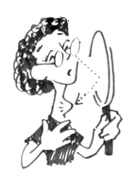
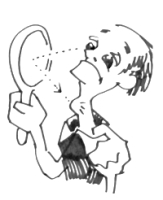

This page has usage examples for the following words:
Advenocortical hormone (Cortical hormone) 副腎皮質ホルモン ふくじんひしつホルモン
Basedow's disease バセドー病 バセドーびょう
Grave's disease グレーブス病 グレーブスびょう
hormonal function ホルモンの機能 ホルモンのきのう
Hypothyroidism 甲状腺機能低下症 こうじょうせんきのうていかしょう
Hyperthyroidism 甲状腺機能過多 こうじょうせんきのうかた
thyroid gland 甲状腺 こうじょうせん
Thyroid hormone 甲状腺ホルモン こうじょうせんホルモン

Your thyroid gland seems enlarged.
甲状腺が腫れているようです。
こうじょうせんが はれているようです。

I don't have any pain.
痛みはありません。
いたみはありません。
Should I be careful of what I eat?
食事上、注意することがありますか。
しょくじじょう、ちゅういすることがありますか。
We will have to do some tests.
まず、検査から始めましょう。
まず、けんさからはじめましょう。
Where are the adrenal glands situated?
副腎は、身体のどこにありますか。
ふくじんは、からだのどこにありますか。
The adrenal glands are situated by the kidneys, almost attached to the kidney.
副腎は、腎臓の上方にくっつくように位置しています。
ふくじんは、じんぞうのじょうほうにくっつくように いちしています。
A conversation between a patient and a doctor about hormonal function
Patient:
I would like to ask about hormonal function. I was surprised to learn that the General Headquarters of hormone production is located near the center of the brain (ho01). I had no clue. My question this time is how does the hypophysis secrete hormones to, for example, the adrenal or thyroid gland? Does the hypophysis, the central organ of hormone secretion, secrete respective hormones?
Doctor:
ホルモンの機能について伺います。ホルモンの総指令部が脳の中心近くにある（ho01を参照）ということは、何の知識もない私にとっては驚きでした。ところで、その脳下垂体から、例えば、副腎や甲状腺に、どのようにしてホルモンが分泌されるのか、というのが今回尋ねたいところです。ホルモンの分泌の中枢器官である、下垂体から、個々に分泌されるのでしょうか？
Effects of hormones on the body are as follows.
1. stimulation or inhibition of growth
2. mood swings
3. activation or inhibition of the immune system
4. regulation of metabolism
5. preparation of the body for fighting, sex, fleeing, mating and other activities.
6. Preparation of the body for a new phase of life, such as puberty, parenting and menopause
7. hunger craving
The Hypophysis (also called the pituitary gland), the central organ of hormone secretion, is composed of the anterior pituitary, the intermediate lobe and the posterior pituitary.
The anterior pituitary synthesizes and secretes various hormones which control the functions of other endocrine organs and regulates hormone secretion from these organs (target organs), including ACTH (adrenocorticotropic hormone), TSH (thyroid stimulating hormone), GnRH (Gonadotropin), LH (lutenizing hormone), FSH (follicle-stimulating hormone), GH (growth hormone) and PRL (prolactin). The intermediate lobe secrets MSH (melanocyte-stimulating hormone) and the posterior pituitary secrets OXT (oxytocin) and VP (vasopressin or antidiuretic hormone). The Hypophysis is rich in blood vessels, which transport efficiently secreted hormones throughout the body.
Although hormone secretion from the anterior pituitary is under the control of the hypothalamus, that detail is omitted here.
まず、ホルモンの体に及ぼす影響をまとめてみます。
1． 成長の推進或いは阻止
2． 感情の動き
3． 免疫機構の活性化或いは抑制
4． 代謝の規制
5． 身体が戦い、生殖，避難などに直面できるよう準備する。
6． 身体を新しい段階（思春期、出産、閉経等）へと導く。
7． 食欲の調節
上記に必要なホルモン分泌の中枢器官である脳下垂体（あるいは下垂体）は、前葉、中葉、後葉の３つの部分にわけられ、前葉からは、副腎皮質刺激ホルモン（ACTH）、甲状腺刺激ホルモン（TSH）、性腺刺激ホルモン（gonadotropinn）黄体形成ホルモン（LH）卵胞刺激ホルモン（FSH）成長ホルモン（GH）、プロラクチン（PRL）などの、他の内分泌器官（標的臓器）の機能を左右し、そこからのホルモン分泌を調節する多種のホルモンが分泌され、中葉からは、メラニン細胞刺激ホルモン（MSH: melanotropin）、後葉からは、オキシトシン（OXT: oxytocin）とバソプレッシン（VP: vasopressin 抗利尿ホルモン）が分泌されます。
下垂体には血管が非常に発達しており、分泌されたホルモンが効率よく血流に乗って全身に運ばれるようになっています。
脳下垂体前葉ホルモンの分泌は、更に、視床下部からのホルモンにより調節を受けていますが、ここでは詳細ははぶきます。
My two cents 一言おせっかい
Secretion of correct amounts of right hormones requires minuscule adjustment just like launching a rocket.
ホルモンが正常に分泌される為には、月にロケットを飛ばすのと同様に、微妙な調整が必要です。
[ho02]
| © 1995-2013 NACOS International Institute. All Rights Reserved. |